2D, 3D Modelation
For this week i chose the solidworks for model my project final sketch.
I choose the solidworks to make this work because i work with this software a while ago and i like this software and is very powerful.
Before i use the solidworks to make 3D model i drew some skecthes in my notepad.
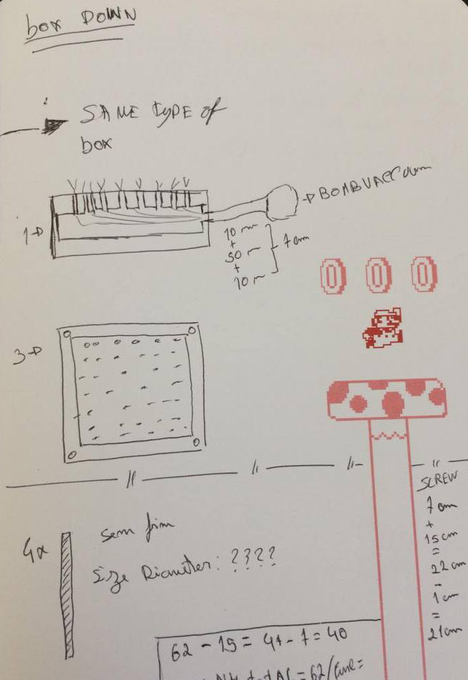
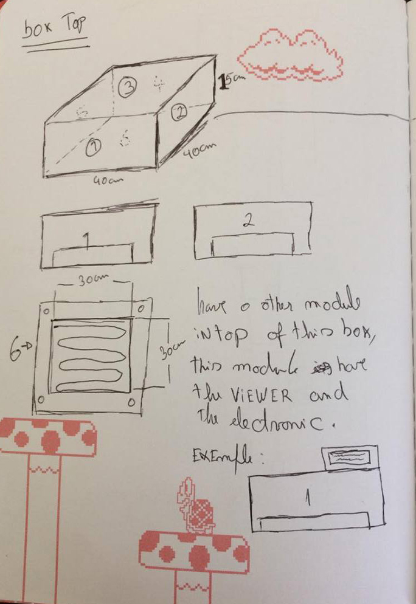
In Solidworks i make some parts individually for in final i make one assembly total with all parts. In this images i show some steps i use to make one part. 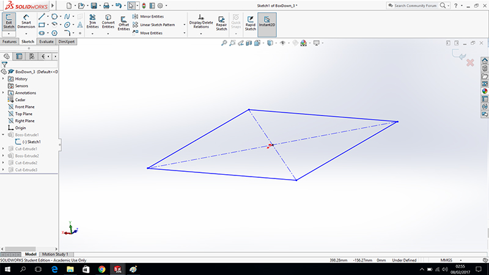
Before i drew in 2D i make a Extrude to make a box that i´m going to work. 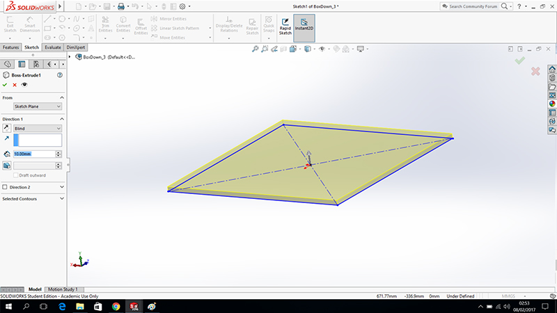
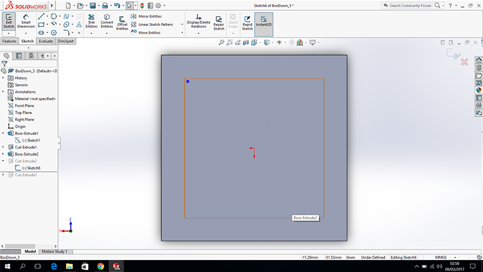 In this steps i drew one circle and i make Linear Sketch Pattern to copy one circle in many cicles, in this tool you chose the direction what do you want to do the copy as also you chose the number of circles and spacing between circles. 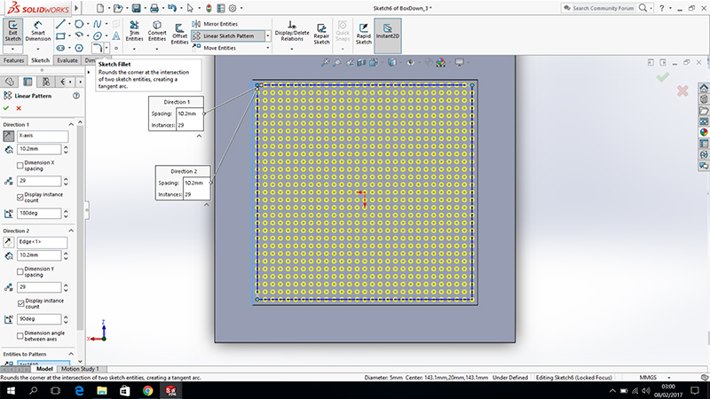
Before i drew the circles i make Extruded Cut to make some holes. 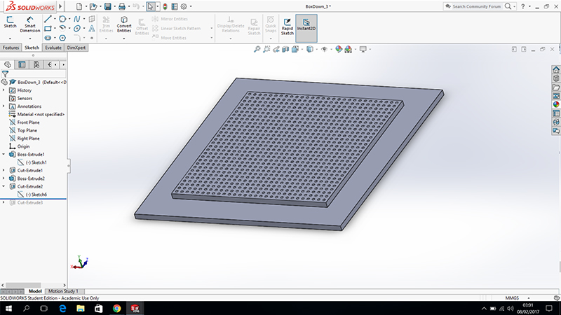
At the end i choose the material to assign this part. 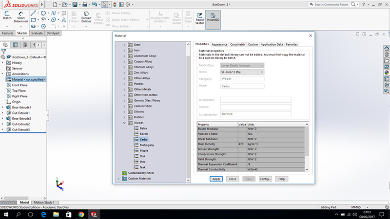
In this i caught all parts i modeled and amssemble all to make my machine. 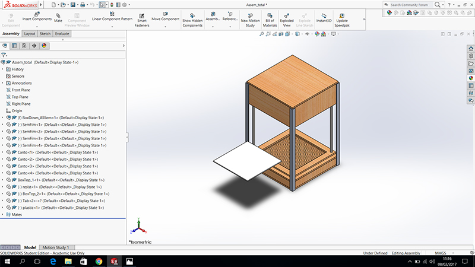
Animation
To make the animation i use the Motion study in Solidworks. Is Very simple to make a simple animation, for make the animation you only need activated Autokey this option you only nedd to move the objects for place you want and solidworks put one key in timeline automatically. You can see the timeline is empty. In this images i show the steps to make a simple animation on Motion Study in Solidworks. In this image can be seen the orange bar this bar show in the time we are. I put this bar in 2seconds becase i want the animation to happen to this time.
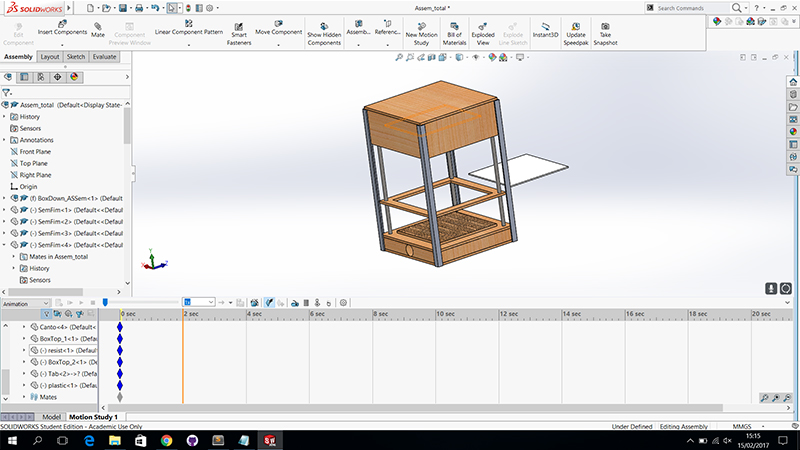
In this step i move the component to the place i want and the solidworks put a key automattically in time line.
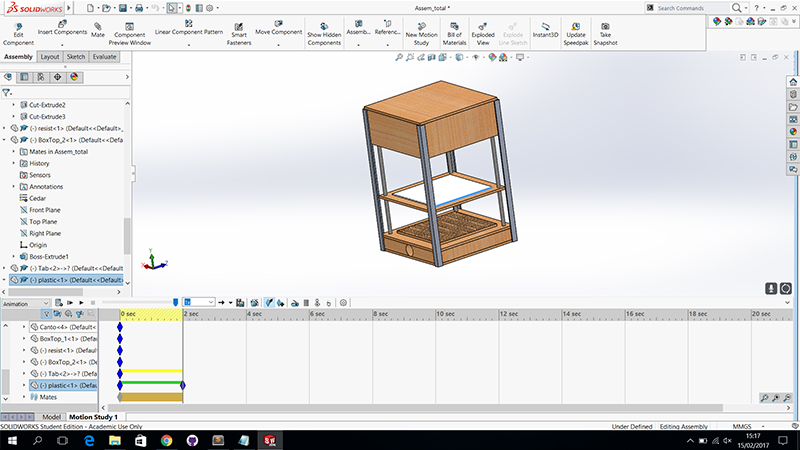
In this step i move two component in simultaneausly and can see in the time line the two component i move and the keys of each components.
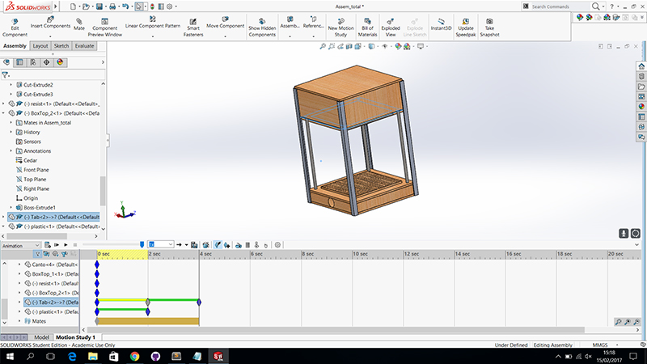
This is a final of my animation and all operation i make to this animation.
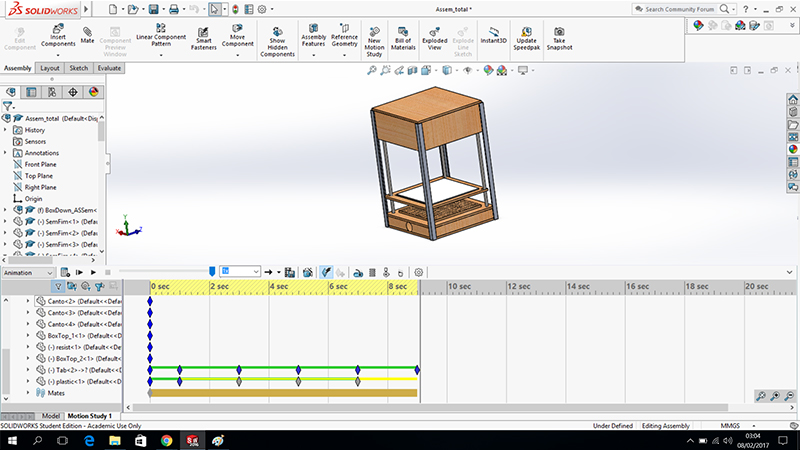
In this animation i show the simple operation of my machine.